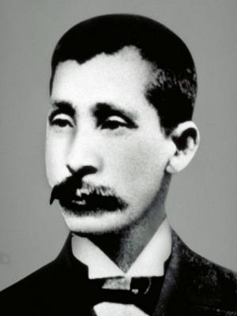

神話の故郷
～宮崎～
ABOUT
宮崎ってどんなとこ？
- 面積 約77万㎢
- 人口 約107万人
- 県庁所在地 宮崎市
- 人口密度 140人/㎢
HISTORY
歴史

小村寿太郎
小村寿太郎は、1855年に日向国(現宮崎県)で生まれた人物であり、日本でも有名な外交官の一人である。主な功績としては、関税自主権の回復が挙げられる。
NATURE
自然
～都井岬～
都井岬は宮崎県串間市に位置し、
太平洋に面する岬です。
ここでは、
多くの野生馬を
見ることが
できます。
FOOD
食べ物
.jpg) |
.jpg) |
～宮崎牛～宮崎の肉用牛の飼養頭数は北海道、鹿児島に次ぐ第三位であり、 |
～チキン南蛮～チキン南蛮は宮崎を代表する郷土料理であり、 |